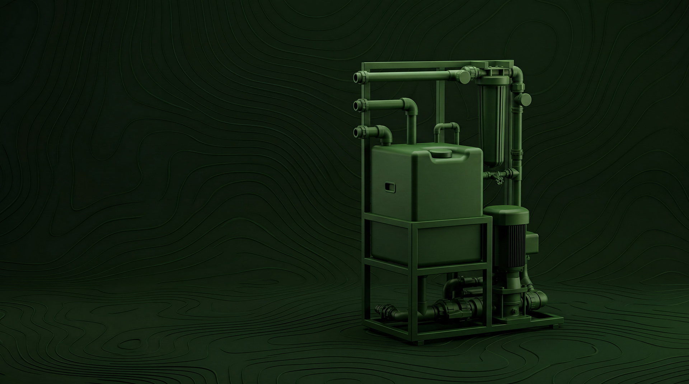

Очистка мембран обратного осмоса
Выполняем технологическую промывку мембран обратного осмоса с соблюдением параметров, безопасных для оборудования заказчика.
Особенности выполнения работ
Бур Сервис использует оборудование, которое не наносит вред мембранам заказчика. Работы выполняются строго по технологии.
Химический раствор подогревается не выше заданной температуры, давление в системе регулируется, а на установке предусмотрен фильтр для дополнительной защиты мембран в процессе промывки.
Что контролируется в процессе
- Температура промывочного раствора
- Давление в системе
- Безопасность мембран
- Соблюдение технологической последовательности
- Стабильность работы оборудования в процессе обслуживания